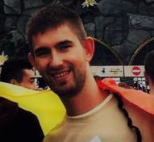

Martin
Volám sa Martin Muller mám 22 rokov a bývam v obci Červeník. Momentálne študujem na Slovenskej technickej univerzite v Bratislave a konkrétne odbor aplikovaná informatika. Som v 3 ročníku a tento rok by som mal končiť bakalárske štúdium, škola ma baví a som rád že som si vybral práve tento odbor. Za uplinulé dva roky som získal veľa nových informácii o technike ako tekej, naučil som sa programovať v jazyku C Matlab a používať iné programy.
Momentálne medzi moje koníčky patrí:
- bicyklovanie
- behanie
- chodenie von s kamarátmi
- venčenie psa